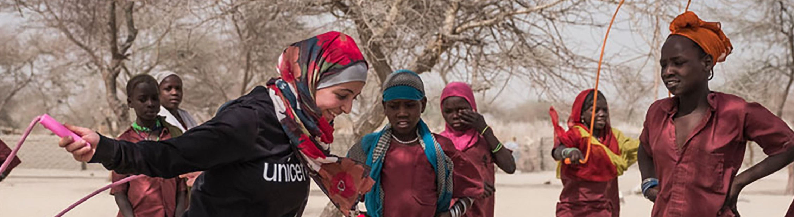

The Problem
Women in the workplace are usually treated with much less respect and dignity. Whether it be through unequal pay, unfair situations, or anything like that, they are suffering, and for no real reason at all should this continue. Even outside the workplace, when they are out and about, they have much less pleasant lives, and this isn't enough of a attention grabber as it should be. We have to fix their unreasonable diffulty in everyday activies, and unbearable, unfair situations throughout the workplace and the household.
How it is effecting woman and how we can stop it
Woman have nearly unberable conditions in which they have to live, consisting of problems in the household, workplace, and even beyond those, in their everyday outside activities. For example, some woman may have the same jobs as men within a company, but 9 out of 10 of those woman have to work much, much harder to get there, and they don't nearly as much pay as their male counterpart. We can stop this by starting petitions, rallies, and fundraisers to help boost the respect those woman recieve and the pay they recieve as well.
